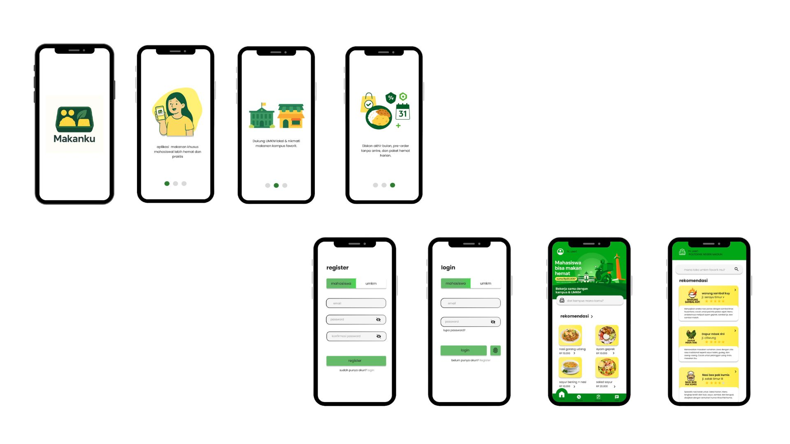
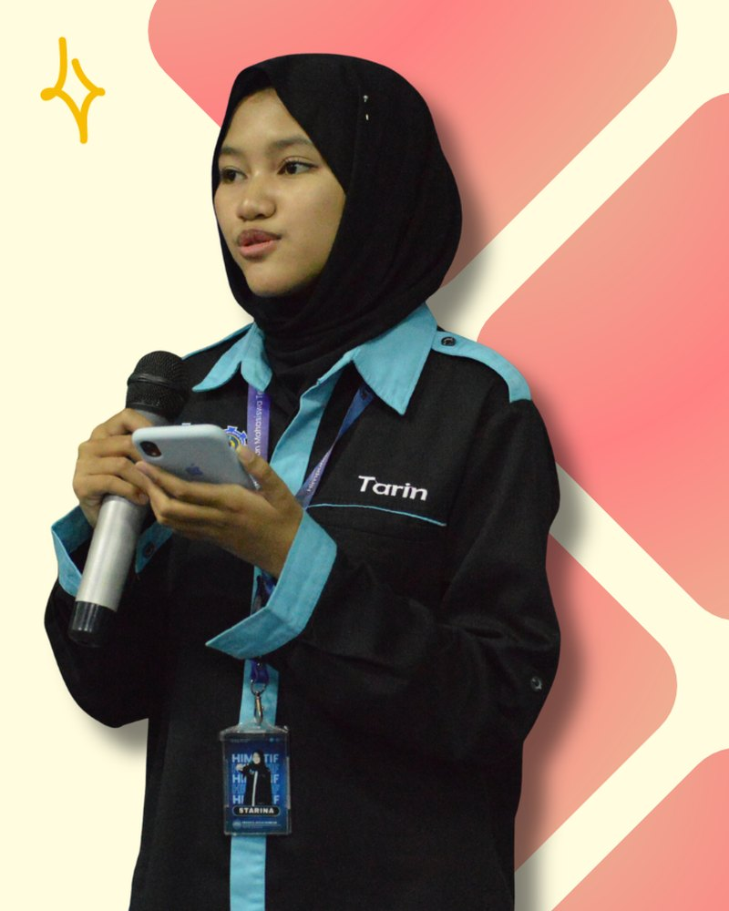
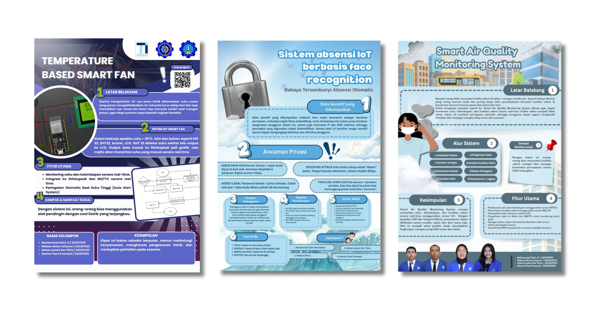
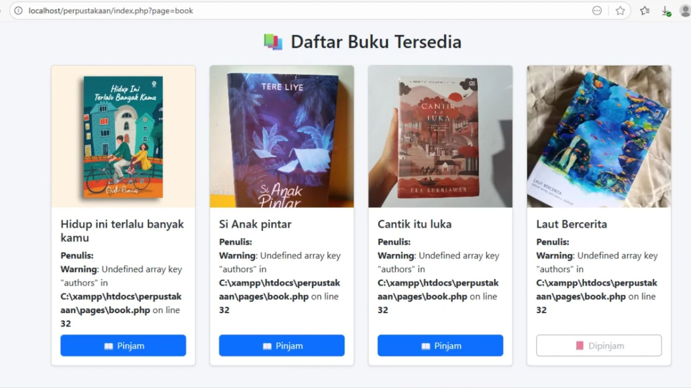
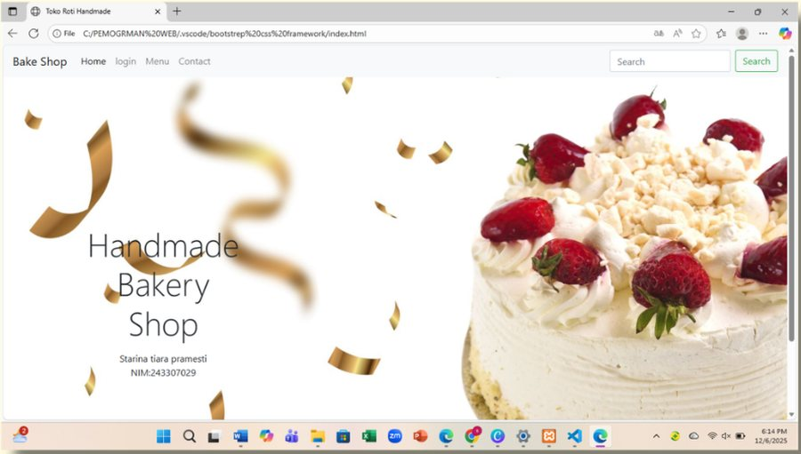
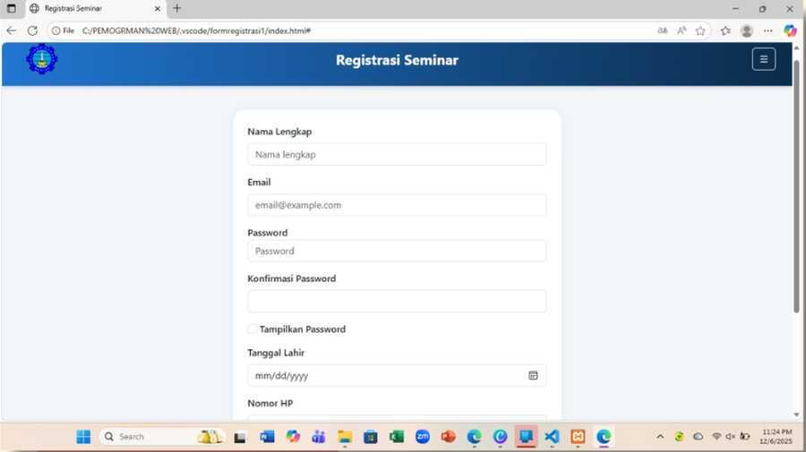

UI/UX
Makanku
Desain aplikasi mobile pemesanan makanan khusus mahasiswa yang mendukung UMKM kampus, lengkap dengan voucher, pre-order, chat driver, dan riwayat pesanan.
FigmaMobile UI
Halo, saya Starina Tiara Pramesti.
Mahasiswa Teknologi Informasi Politeknik Negeri Madiun yang senang mengubah konsep menjadi desain dan tampilan web yang responsif, fungsional, dan mudah digunakan.

Tentang Saya
Pengalaman berorganisasi melatih saya dalam komunikasi, kerja sama tim, dan manajemen waktu. Saya senang mempelajari hal baru dan mengeksplorasi ide kreatif.
Hubungi SayaKeahlian
Merancang antarmuka aplikasi dan materi visual yang rapi.
Antarmuka responsif dan logika sisi server.
Bahasa dan perangkat pendukung pengembangan.
Proyek

Desain aplikasi mobile pemesanan makanan khusus mahasiswa yang mendukung UMKM kampus, lengkap dengan voucher, pre-order, chat driver, dan riwayat pesanan.

Poster kelompok tentang Temperature Based Smart Fan (ESP32, DHT22, ThingSpeak) dan risiko privasi absensi IoT berbasis face recognition.

Aplikasi web dengan login dan registrasi, halaman admin untuk mengelola buku, serta halaman pengguna untuk meminjam dan mengembalikan buku.

Situs toko roti handmade dengan halaman beranda, login, menu produk, dan formulir kontak yang responsif.

Formulir pendaftaran seminar teknologi dengan validasi isian, pilihan tampilkan password, dan menu samping informasi, jadwal, serta kontak.
Kontak
Kirim pesan langsung ke WhatsApp saya. Saya akan membalas secepatnya.
Hubungi saya via WhatsApp